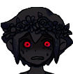
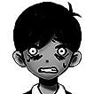
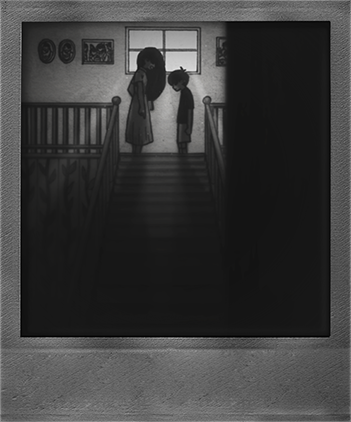
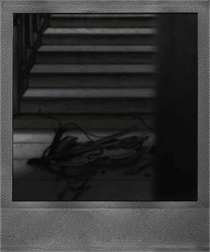
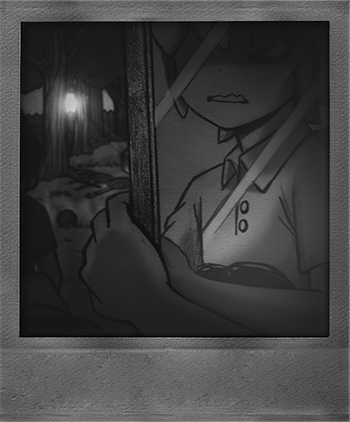
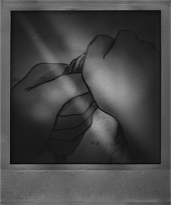
BLACK SPACE
Accès à la zone
Cette zone est atteinte après avoir complété le pendu (le choix de ce jeu précis n'est pas annodin...) en collectant les touches de clavier qui sont trouvables un peu partout à travers le parcours du jeu, ce qui finis par épeller "WELCOME TO BLACK SPACE" (ou "BIENVENUE DANS LESPACE BLANC" dans le patch FR)
Introduction à la zone
Bienvenue dans le black space. Vous vous situez dans l'endroit où Sunny à enterré tout son trauma, toute son histoire, c'est l'histoire que Omori découvre, en meme temps que nous, pour un énième fois avant de tout oublier pour se protéger mentalement.... Ou pas? Peut-être que c'est la dernière fois que Omori devra vivre tout ça...
Contenu
Ici, nous découvrons differents paysages, avec "quelque chose" (oui, c'est comme ça que cette entité est appellée dans le jeu) prenant la forme de differentes peur de Omori... ou Sunny? On y découvre l'histoire de ce qu'il s'est réellement passé avec la mort de Mari.
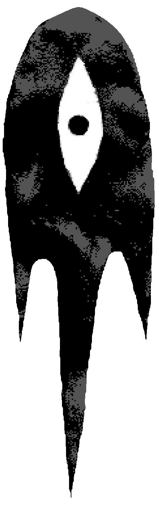
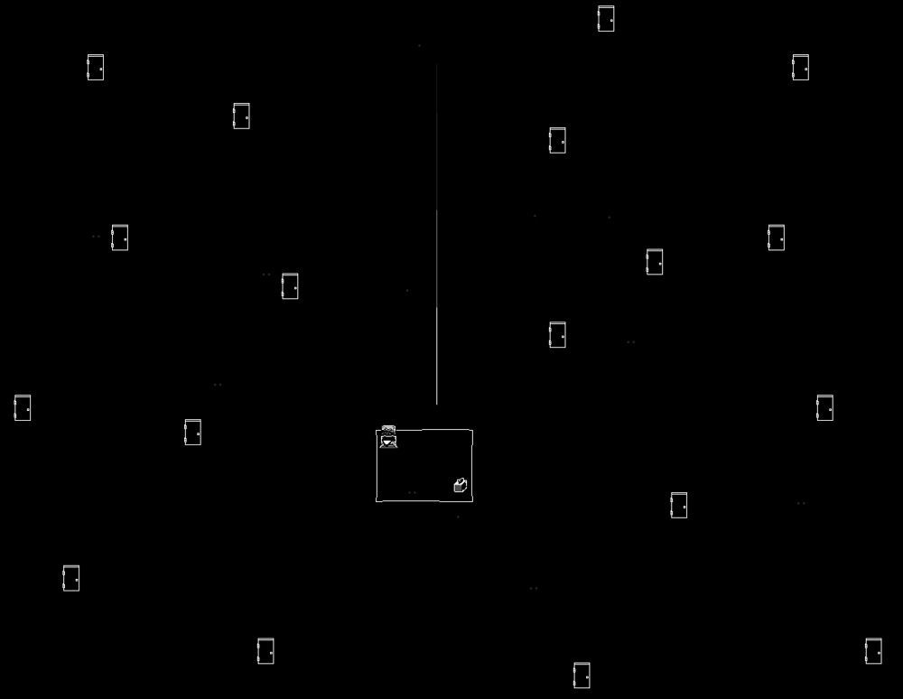
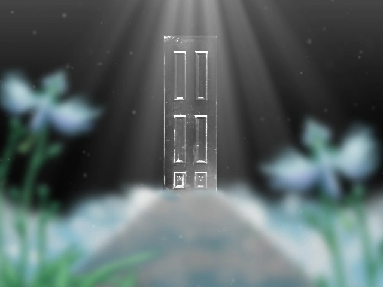
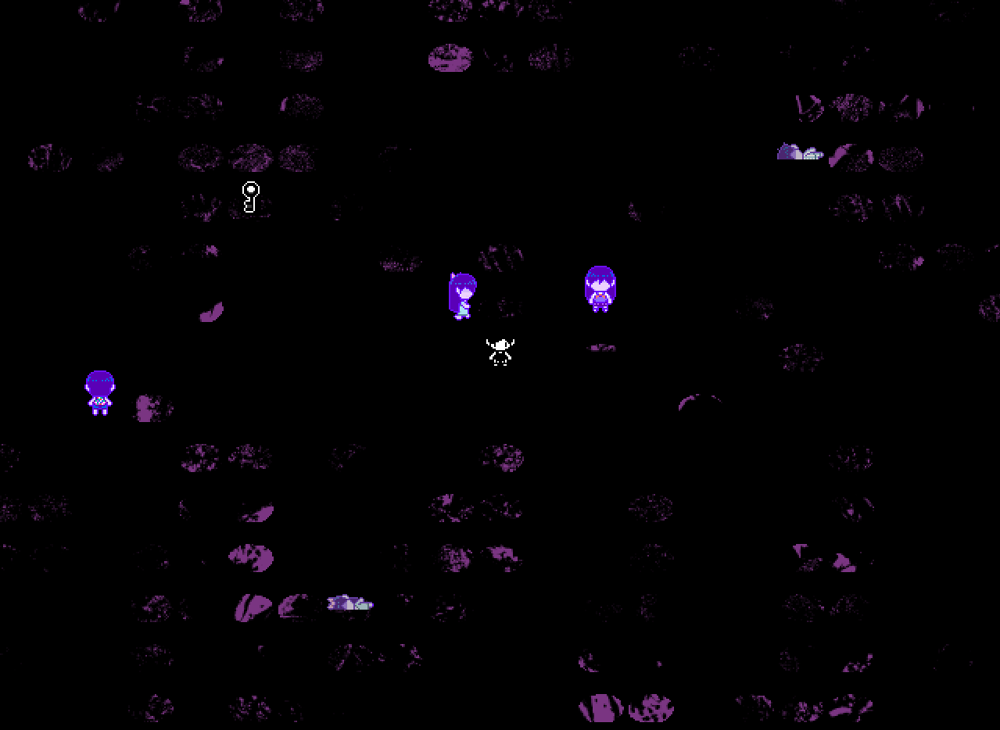
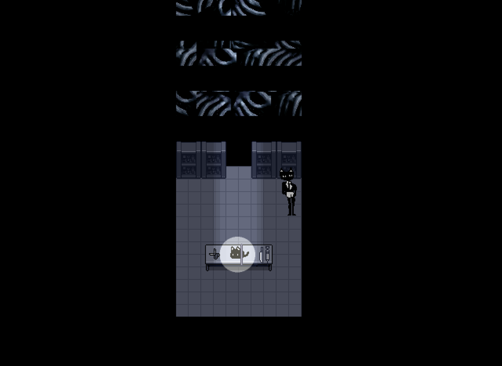
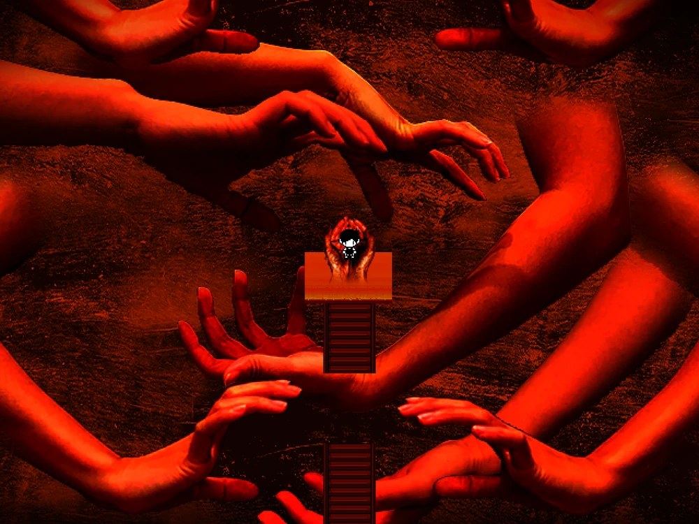
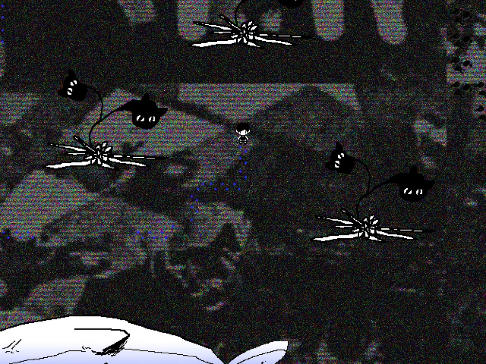
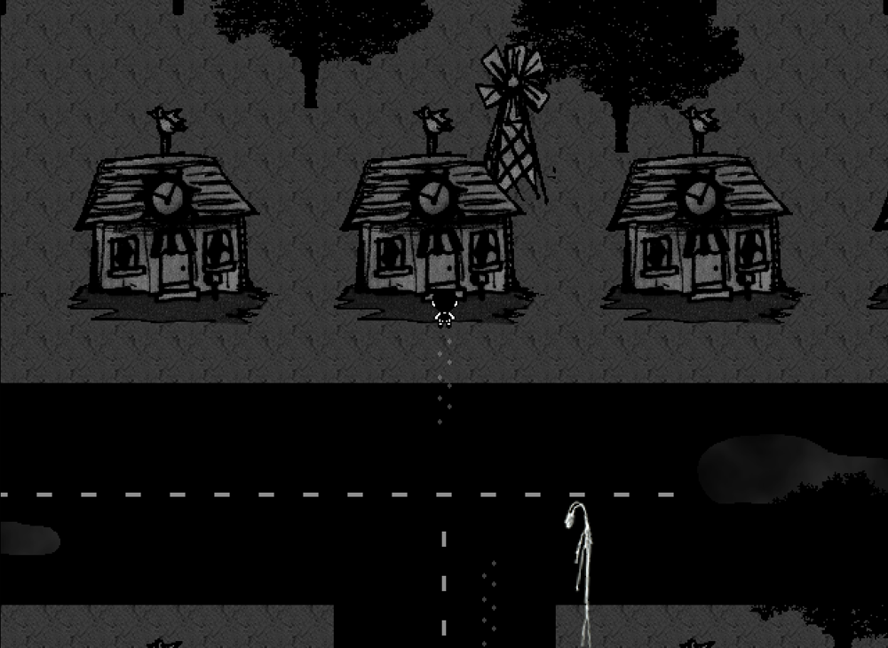
Omori
Omori n'est pas un simple personnage pour les rêves de sunny. Il est la personnification de la culpabilité de Sunny, de sa dépression, son anxiété mais aussi de la répression de Sunny envers ses sentiments, ce qui fait sens- "Omori" est raccourci pour "hikikomori", un terme désignant des personnes qui s'enfermment et s'excluent de la société: Omori est le coté hikikomori de Sunny. 2 des fins du jeu consistent en une confrontation entre Omori et Sunny, un combat a mort en quelque sorte, de qui prendra le controle définitif du corps de Sunny. Durant ce combat, ou le joueur joue Sunny; Omori fait de nombreux commentaires:
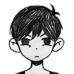
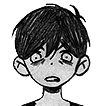
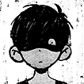
Conclusion
Omori n'est pas un jeu simple; C'est un jeu qui a marqué la large majorité de ses joueurs par la manière dont il transmet et décrit précisément les emotions dans ce moment difficile que les personnages vivent. Les thèmes abordés tel que le suicide ne sont pas des thèmes simples a aborder dans une histoire, et OMOCAT a reussi à faire une représentation réussie. On y voit comment l'ensemble d'un groupe gère le deuil d'une personne chère de manière differente, et comment cela affecte le groupe en un tout. Je pense ne pas avoir réussi à représenter le jeu aussi bien qu'une experience authentique en y jouant, mais je ne compte pas sur le fait que qui que ce soit qui lise ce site n'y joue non plus; le début est assez ennuyant et fais partir énormément de joueurs. Donc sachez juste que l'interpretation que vous avez lue ici n'est qu'une partie infime de ce jeu et ne vous basez pas unqiuement sur ceci pour avoir une opinion sur OMORI. Malgré ça, merci d'avoir lu.e!